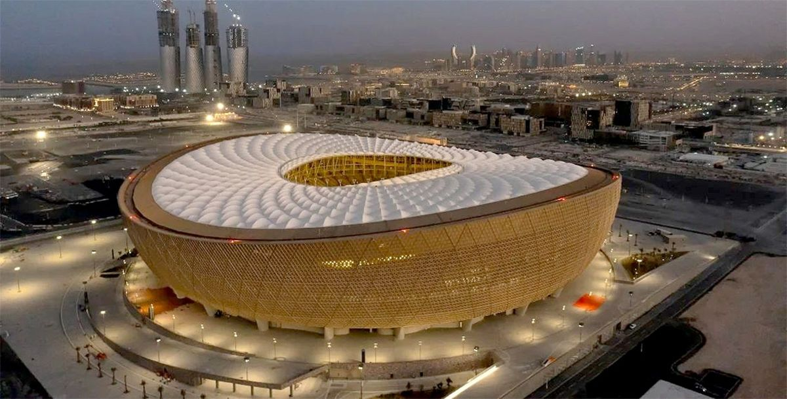
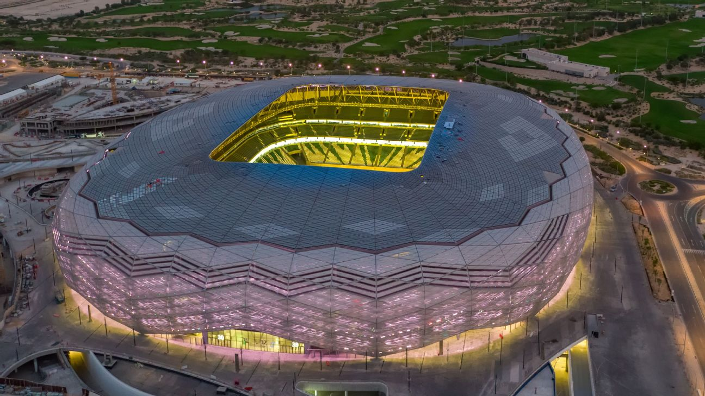
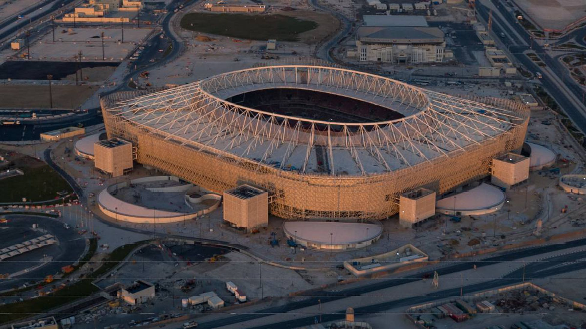
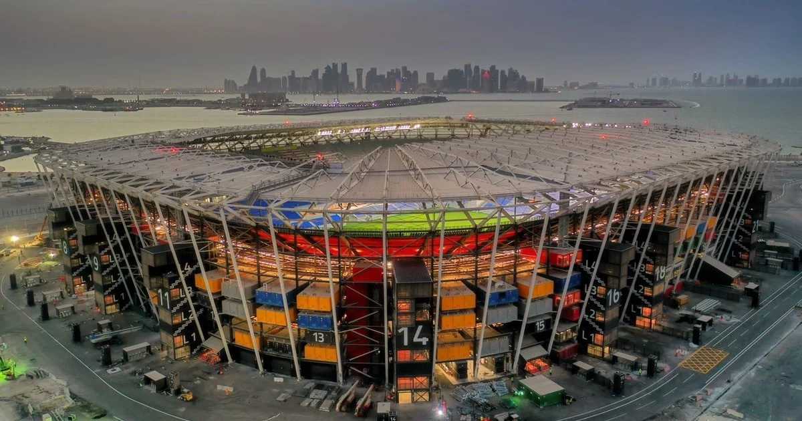
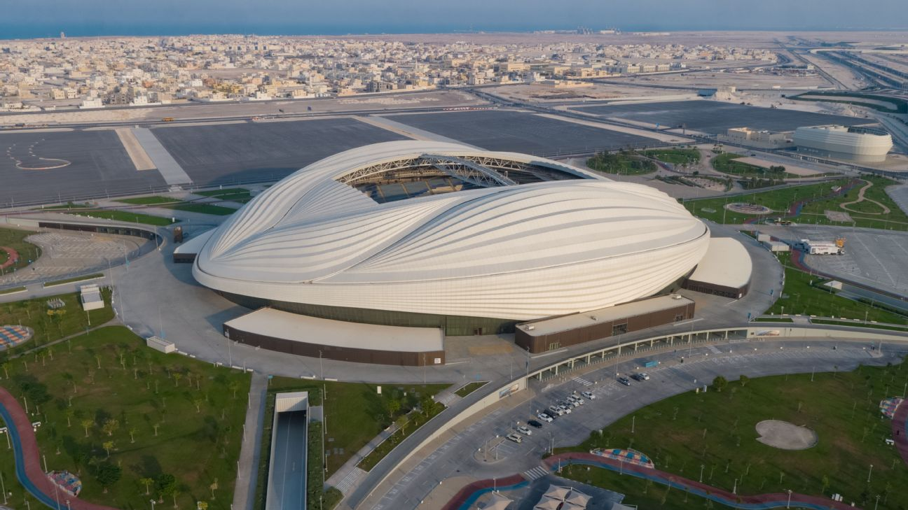

Estadio Lusail

Ubicado en la ciudad de Lusail, esta maravilla arquitectónica llevará el título de la cancha más grande de la competición con una capacidad para 80.000 espectadores y la sede del partido final de Qatar 2022. Cuenta con una sala VIP y un sector denominado Súper VIP.
Estadio Ciudad de la Educación

Este mismo cuenta con una capacidad para 45.000 espectadores, se llama Ciudad de la Educación por encontrarse en las proximidades del polo educativo, que nuclea escuelas y universidades en Al Rayyan, al oeste de Doha.
Estadio Internacional Khalifa

Khalifa International con una capacidad para 40.000 espectadores, ubicado en Doha, reabrió sus puertas en mayo del 2017 después de una ambiciosa remodelación. Fue el primer estadio del mundo en ser construido con una innovadora tecnología de enfriamiento que emplea hasta un 40% menos de energía que cualquier sistema convencional y, lo más importante, es el primer estadio refrigerado al aire libre.
Estadio Al Rayyan

Construido en el lugar del antiguo Estadio Ahmed Bin Ali e inspirado en las dunas de arena de Qatar, su capacidad es para 40.000 espectadores. Está previsto que solo reciba partidos hasta los cuartos de final. El recinto será el nuevo estadio de Al-Rayyan Club, uno de los clubes más populares en Qatar.
Estadio Al Thumama

Este estadio tampoco tendrá partidos únicamente hasta los cuartos de final, cuenta con una capacidad para 40.000 espectadores. Cuenta con un imponente diseño que representa la gahfiya, una toca tradicional tejida usada por los hombres en todo el mundo árabe. El novedoso sistema de refrigeración del estadio asegurará que la temperatura esté siempre en 18 grados.
Estadio 974 Ras Abu Aboud

Este mismo cuenta con una capacidad para 40.000 espectadores, también tendrá su sistema de refrigeración para paliar las altas temperaturas. Se utilizará hasta cuartos. Fue hecho con contenedores para transportes y asientos removibles. Después del Mundial, la estructura será desmontada totalmente y reaprovechada.
Estadio Al Janoub

Tiene una capacidad para 40.000 espectadores. Está inspirado en las velas de los barcos tradicionales y tiene como objetivo destacar las industrias locales. Tuvo un costo de 575 millones de dólares y se necesitaron 10 millones de horas de trabajo para levantarlo desde cero.